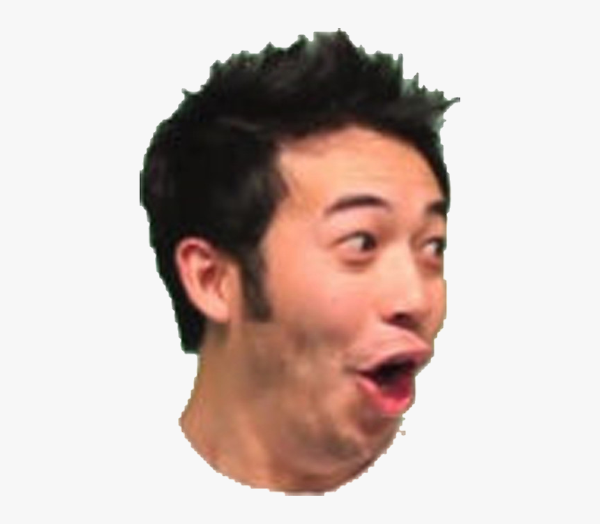
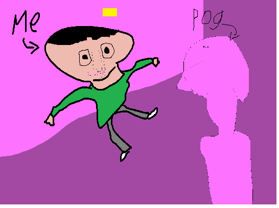
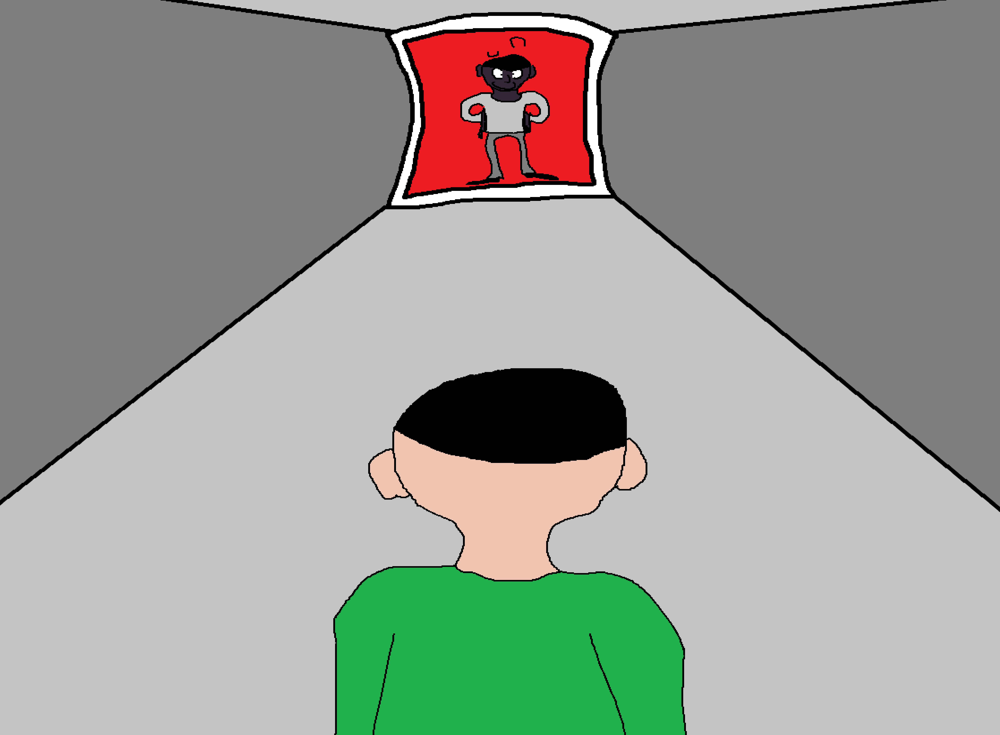
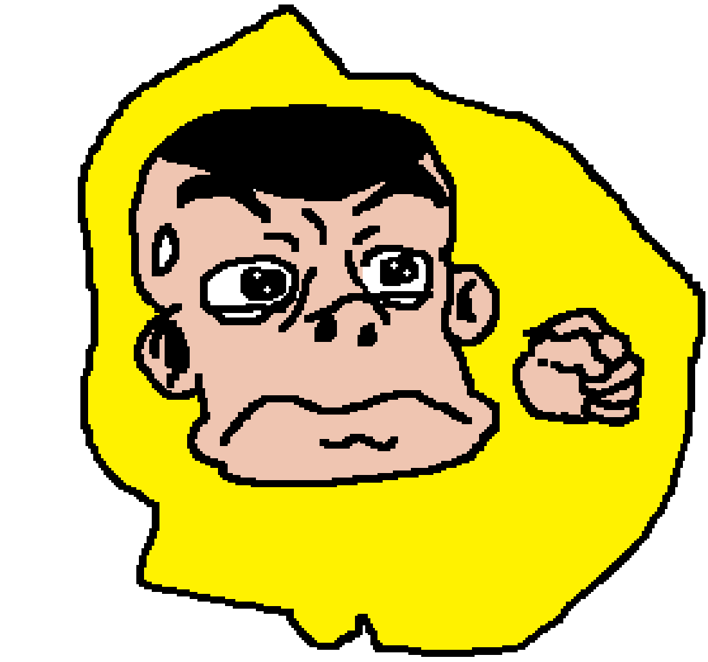
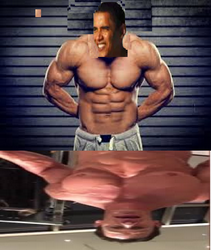
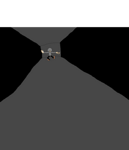

Elon Pelon: The Pog Dimension

Hey, it's me, Elon Pelon. Right Backatcha with Relon Relon. You may be wondering, what happened next? Well, it all happened in that late 2020 morning...
With a hardy goal in mind and will power on my feet, I went on home to do some researching. Then, boom! Peter Griffin and Transgender Louis Griffin crashed through my roof! They haunted my spirit hauntily evil after! But the story didn't end there, no no no! I needed someone to grant my wish! My powerful, graceful stinking, wish! Ain't gotta cataclism on your comb?
If space travel was going to be safe for all, I needed to summon my sage! So, I got right to it. "Pog, Pog, Pog!" I scremt more than I have ever scromed before, and there he was before my eyes, Pog Champ Guy! He did the Pog face and everything! "This wish you have is too strong to be granted by me in this domain, Pog Champ said with a smirk," Pog Champ Guy said with a Smirk. "I'll have to bring you back to the Pog Dimension with me!" "Alrighty! A hardy deal's a hardy steal! But why did you just narrate your own gesture?
So, the Pog Dimension, Eh? We walked round and round, party in the hills or the burns, A glowing purplie place of many colors. "I have this, glowing orb for you, Elon Pelon!" I took the orb, but I really had to go, so I ripped my panty wanties approximately 123.ABC centimeters below its location before I partooketh the action, and pissed on the floor! "Elon Pelon, that doens't make me happy. I am GOING to make this GLWOGING orb even HARDER to achiev."

So, The Trials of the Pog Domain begooned. Pog Champ Guy had me jump over some obstacles, swing myself up the hollar, all sorts of the laddie! And finally, I got to the finale challenge. The mirror of reverse Pelon.

Some Photos that Shelly took when I was there. Shelly is my photographer.
So, the final trial, eh? The figure in the mirror looked like me, but reverse me! Nolep Nole showed his
power, the power of my desire! He transformed his head into a gorilla head! I got hot and sweaty,
mom confetti, knees weak arm steady, and the lust for gorilla kicked in full swing.

Before I could live up to ym love of sexy gorillas i had to live up ot my goal of making space travel safe for all! I refused the temptation of Gorilla, and all was well. Pog Champ guy said I did good work, and that my efforts deserved the Glowing Orb. "Collect another one, and you'll have the key to space travel in no time!"
So I went, he wew too, we both wode. And oh did I have one! As I was walking back to the portal, my way out of the Pog Dimension, BARRACK OBAMA challenged me to a DUEL.

"Hold on, I just wanna see your specs. Put up a good battle, man!"
So we fought. I used a killer blow and tackled him with a punch, yet he dodged it and threw one at my shins. Yowzers! Right in the tusheum! I punched and punched, punches kept punching, I punched and punched, punchingly. He used his secret power, the ability to turn into John Cena! Stats went up the roof, and his moves were truely excellent! I punched and punched so rough and rough, punches and punches so tough and tough. At the end of it all, I ended up on top, and Barrack Obama had a few words.
"Uh hello this is your former president Barrack Obama, and I know how to beat box!"
He beatbew for me good, like real good, and became my ally. So we walked around, searching for the exit, when we finally hatched up a plan. To Unpog!
We committed a reverse Pog! There Ya have it, the way out of the Pog Dimension! Gopping all the way!!
BUT
NO!
Sample Headline
Elon Pelon: The Rise Of
Ketamine Man
So me and Barack Obama who can turn into John Cena travelled back to our dimension. We got to the SpaceX headquarters and opened the dibble door, AND DARKNESS EMERGED. We walked and walked, and we just kept walking, when a peculiar and familiar man was standing with his hands in his pockets.
"I've been waiting, Elon Pelon."
